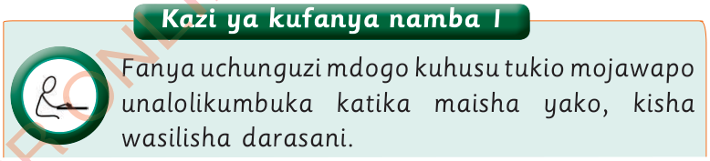

Kazi ya kufanya namba 1

Fanya uchunguzi mdogo kuhusu tukio mojawapo unalolikumbuka katika maisha yako, kisha wasilisha darasani.

Fanya uchunguzi mdogo kuhusu tukio mojawapo unalolikumbuka katika maisha yako, kisha wasilisha darasani.